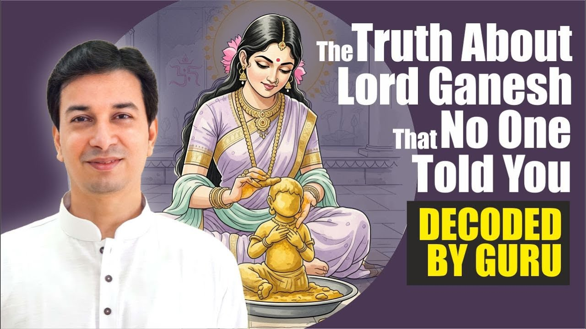

क्या आज भी आपके मन में गणेश की छवि केवल सूँड वाले, मोदक खाने वाले देवता की है? आचार्य उपेंद्र जी इस प्रवचन में प्रसिद्ध गणेश जन्म कथा की परतें खोलते हैं और दिखाते हैं कि यह कथा वास्तव में हमारे भीतर की विवेक बुद्धि के जन्म की कथा है।
आचार्य जी की शिक्षा में असली गणेश ओंकार है, सर्वत्र व्याप्त परम सत्य, ब्रह्म वाला गणेश। मूलाधार से जुड़े गणेश हमारे भीतर की विवेक बुद्धि हैं, इंद्रियों का स्वामी बनने की बुद्धि। पार्वती का मैल, शिवजी का लौटना और हाथी का सिर, ये सब इसी विवेक के जन्म की कथा कहते हैं।
क्या गणेश कहीं बाहर बैठे हैं?
आचार्य जी पूछते हैं: कौन है वास्तविक गणेश? क्या अभी भी लगता है कि कोई बाहर सूँड वाला बैठा है?
धीरे-धीरे इतना तो समझ में आ रहा है कि वह ऐसा नहीं है। वह रूप प्रतीकात्मकता (symbolism) था, एक अर्थ को रूप में कहने का तरीका।
गणेश का पता क्या है?
तो फिर उनका वास्तविक पता कहाँ है? गणपति अथर्वशीर्ष कहता है:
त्वं मूलाधारस्थितोऽसि नित्यम्।
"आप नित्य मूलाधार चक्र में स्थित हैं।"
(गणपति अथर्वशीर्ष)
पर आचार्य जी यह भी कहते हैं कि ईश्वर किसी एक चक्र में बंद नहीं है। गीता कहती है:
वासुदेवः सर्वमिति।
"सब कुछ वासुदेव ही है।"
(श्रीमद्भगवद्गीता ७.१९)
और उपनिषद् कहता है:
सर्वं खल्विदं ब्रह्म।
"यह सब कुछ ब्रह्म ही है।"
(छान्दोग्य उपनिषद् ३.१४.१)
तो जो सर्वत्र है, वह मूलाधार में विशेष कैसे हो गया?
दो गणेश: ओंकार और विवेक
उत्तर यह है कि जो सर्वत्र व्याप्त है, वह ओंकार है, परम सत्य (the ultimate reality)। वही असली, ब्रह्म वाला गणेश है, और वहाँ तक हमें स्वयं पहुँचना है।
और जो मूलाधार से जुड़ा गणेश है, वह हमारे भीतर की विवेक बुद्धि है: विनायक वाली बुद्धि, गणों (इंद्रियों) का अधिपति बनने की बुद्धि। जब तक मूलाधार चक्र पर नियंत्रण नहीं आता, यह बुद्धि जागती नहीं।
इसीलिए हम कहते हैं "श्री गणेश करना", यानी शुरुआत करना। जीवन की शुरुआत ही विवेक के बिना नहीं हो सकती।
आचार्य जी कहते हैं कि जिसे गणेश कहा गया है, वह हमारे अंदर की विवेक बुद्धि है, गणों का अधिपति बनने वाली बुद्धि।
क्या आपके जीवन के निर्णय आपकी इंद्रियाँ लेती हैं, या आपका विवेक?
पार्वती के मैल से गणेश का जन्म: इसका अर्थ क्या है?
कथा कहती है कि स्नान करते समय पार्वती जी के मैल से गणेश उत्पन्न हुए। फिर शिवजी ने उनका सिर काटा और बाद में हाथी का सिर लगाया गया।
आचार्य जी पूछते हैं: क्या पार्वती जी ने वर्षों तक स्नान नहीं किया होगा कि इतने मैल से एक बालक बन जाए? ऐसा तो हो ही नहीं सकता। यह सब प्रतीक है।
सृष्टि के क्रम में सबसे ऊपर पुरुष और प्रकृति हैं। उनके नीचे पहली कृति प्रकृति से, यानी पार्वती से आती है। यह "मैल" है जड़त्व, माया का अंग, यानी सत्त्व, रजस् और तमस् (प्रकृति के तीन गुण)। यह इतना है कि इससे पूरा विश्व बन सकता है, और इसी से हमारी बुद्धि बनी।
मैल का अर्थ गंदगी नहीं
भक्ति भाव वाले लोग पूछेंगे: क्या देवी स्नान नहीं करती थीं? आचार्य जी उन्हें भी उत्तर देते हैं।
जो रोज नहाता है, स्वस्थ और साफ-सुथरा है, उसने कोई भारी काम नहीं किया, फिर भी वह नियम से नहाता है। साबुन और पानी के साथ जो बहकर निकल जाता है, उसे हम दोबारा उपयोग नहीं करते। जो निकल गया, वही मैल है।
वह सुगंधित उबटन हो सकता है, अभ्यंग स्नान का तेल हो सकता है। अभिषेक के समय शरीर को छूकर निकले जल को तो हम तीर्थ कहते हैं। यानी मैल का अर्थ है उनका ही एक अंश, जो अभी उन्हें नहीं चाहिए था। उस दिव्य शक्ति का यही अंश त्रिगुण बना, वहीं से माया शुरू हुई और वहीं से पहली बुद्धि जन्मी।
शिवजी बाहर क्यों गए थे?
कथा में गणेश का जन्म तब होता है जब शिवजी बाहर गए होते हैं। बालक को कहा जाता है, "किसी को भीतर मत आने देना।"
इसका अर्थ गहरा है। जब मैं आत्म तत्त्व (अपना वास्तविक स्वरूप) भूल चुका होता हूँ, तभी संसार और माया रचने की इच्छा होती है। नहीं तो केवल मोक्ष का विचार आएगा। इसलिए शिवजी का बाहर जाना आवश्यक है। तभी बुद्धि सृजन के लिए सक्रिय होती है।
जब गुरु द्वार पर आते हैं
शिवजी लौटते हैं, पर बालक उन्हें पहचानता नहीं। आचार्य जी कहते हैं, यही तब होता है जब हम सत्संग में आते हैं, किसी गुरु से मिलते हैं, वे मार्गदर्शन देते हैं, फिर भी हमें उनकी बातों पर विश्वास नहीं होता।
बालक कहता है, "मैं पार्वती का पुत्र हूँ।" पार्वती, यानी प्रकृति, जड़ भाग, को सब पता है। शिवजी, यानी ओंकार, को पता ही नहीं कि यह हो चुका है।
जब कोई सच्चा मार्गदर्शक आपको आपकी ही बुद्धि के पार की बात बताता है, तो क्या आप द्वार खोलते हैं या रोक देते हैं?
घमासान युद्ध और पार्वती की पुकार
फिर घमासान युद्ध होता है: एक ओर सत्संग और मोक्ष का मार्ग, दूसरी ओर माया का अंग।
ध्यान दें, यह गणेश शिव-पार्वती के मिलन से नहीं, पार्वती के मैल से जन्मे हैं। यह प्रकृति की प्रथम विकृति है, इसीलिए ओंकार इसे नहीं पहचानता।
युद्ध में बालक का सिर कटता है, तो प्रकृति फिर सामने आती है: "अरे, यह क्या किया! यह तो अपना ही पुत्र था। मैंने ही इसे बनाया, यह मेरा स्वरूप है, इसलिए तुम्हारा ही अंश है, क्योंकि मैं तुम्हारी हूँ।"
हाथी का सिर: विवेक के गुण
अब केवल मैल वाली बुद्धि से काम नहीं चलेगा। सारे प्राणियों के सिर लगाकर देखे जाते हैं, कोई ठीक नहीं बैठता। ऐसे पवित्र के लिए विशेष बुद्धि चाहिए। तब मिलता है हाथी, जो विशालता का प्रतीक है।
हाथी के गुण, विवेक बुद्धि के गुण हैं:
- सूप जैसे कान: व्यर्थ बातें उड़ा दो, काम की बात रख लो। कान के कच्चे मत बनो।
- एक आँख: एकाग्रता की शक्ति।
- सूँड: बुरे और अच्छे में से केवल अच्छा निकालना।
- स्मृति: सबसे श्रेष्ठ स्मरण शक्ति, विद्वत्ता।
- विशाल आकार: जैसे हाथी सब प्राणियों में बड़ा, वैसे बुद्धि सब इंद्रियों से ऊपर।
तब उनसे कहा गया, "अब से तुम गणाधिपति बन जाओ।"
आचार्य जी पूछते हैं कि अगर ऐसी विवेक बुद्धि हो, तो क्या हमने अपनी सारी कथाओं को भी काल्पनिक समझना शुरू कर दिया है?
मुख्य बातें
- वास्तविक, सर्वव्यापी गणेश ओंकार है, परम सत्य, जहाँ तक हमें पहुँचना है।
- मूलाधार से जुड़े गणेश हमारी विवेक बुद्धि हैं, इंद्रियों का स्वामी बनने की क्षमता।
- पार्वती का "मैल" गंदगी नहीं, प्रकृति का अंश है: सत्त्व, रजस्, तमस्, जिससे माया और बुद्धि बनी।
- शिवजी का बाहर जाना आत्म तत्त्व का विस्मरण है; उनका लौटना गुरु और सत्संग का आगमन है।
- युद्ध मोक्ष के मार्ग और माया के बीच का संघर्ष है।
- हाथी का सिर विवेक के गुणों का प्रतीक है: छानना, एकाग्रता, श्रेष्ठ को चुनना और इंद्रियों से ऊपर उठना।
- विवेक जागे तो पुराणों की हर कथा एक प्रतीक बनकर खुलने लगती है।

आगे पढ़ें

हर साल गणपति चतुर्थी को आते हैं और अनंत चतुर्दशी को विदा होते हैं। हम उत्सव मनाते हैं, मोदक बनाते हैं, विसर्जन करते हैं।

गणपति अथर्वशीर्ष में गणेश जी की स्तुति में एक पंक्ति आती है:

हम सबने सुना है कि प्रकृति के तीन गुण हैं: सत्व, रज और तम। पर क्या आपने कभी रुककर सोचा है कि "गुण" शब्द का अर्थ वास्तव में क्या है?